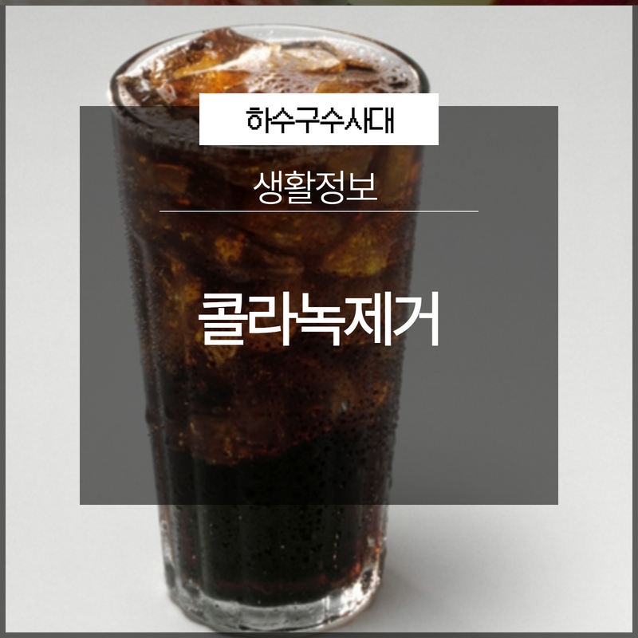
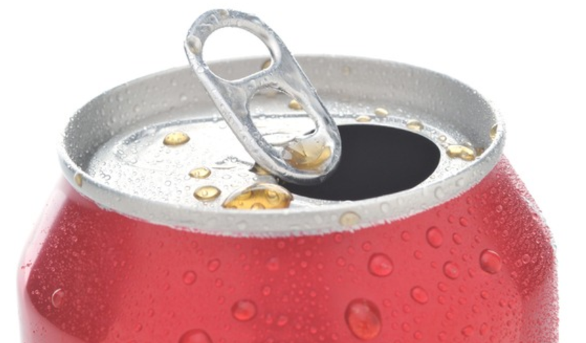
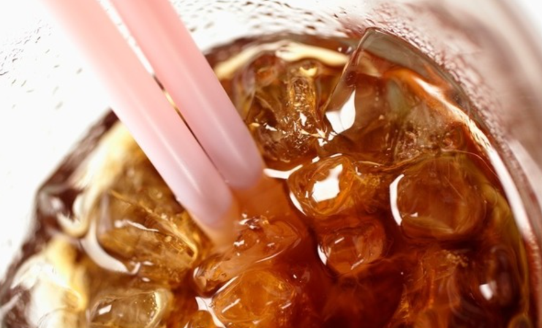
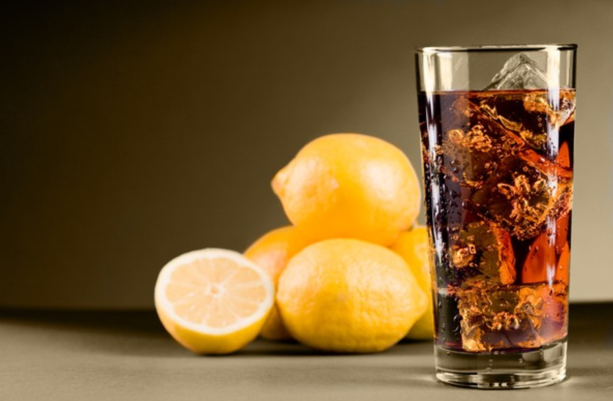
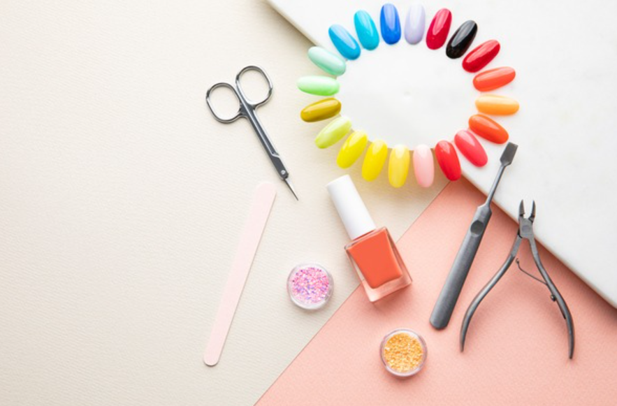
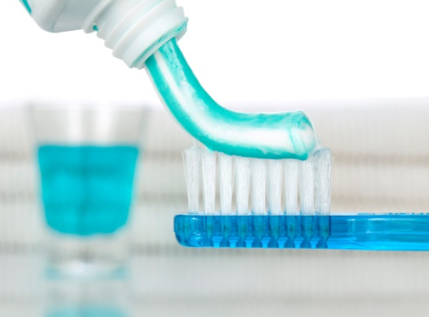

🏠 콜라녹제거 깨끗하게 되돌리는 방법!
용인 하수구막힘 전문 시공 후기

📋 작업 개요
- 위치: 용인
- 서비스 유형: 하수구막힘
- 작업 일시: 2023. 2. 19. 0:07
- 업체명: 하수구수사대 (010-5615-2118)
🔍 문제 상황
안녕하세요. 하수구수사대입니다.
콜라는 남녀노소를 불문하고 많은 분들이 이용하고 있는 기호식품입니다. 그렇기 때문에 많은 분들이 즐겨 찾는 음료라고 할 수 있는데요 하지만 탄산이 빠진 콜라는 마시기에 좀 불편할 수 있는 것입니다. 보통 병에 있는 콜라의 경우는 탄산을 좀 더 오랫동안 유지를 할 수 있는데요. 하지만 이것도 시간이 지나게 되면 탄산이 빠지게 되면서 맛이 덜해지게 될 수밖에 없습니다.
특히 캔으로 된 콜라 같은 경우에는 한번 따게 되면 보관을 하는 것이 어렵다고 할 수 있는데요. 캔 같은 경우는 밀폐가 되지 않기 때문에 탄산이 빠르게 빠져나가게 되는 것입니다. 그래서 탄산이 빠진 콜라는 그냥 버리게 되는 경우가 많다고 할 수 있습니다. 그래서 요즘은 적은 용량의 콜라캔도 나와서 이용을 하는 분들이 많은 것 같습니다.
탄산 빠진 콜라로 콜라녹제거를 알려드리도록 하겠습니다.

🔎 원인 분석
💡 전문가 진단: 탄산 빠진 콜라로 콜라녹제거를 알려드리도록 하겠습니다.
탄산이 빠진 콜라 같은 경우는 그냥 버리게 되는 것이 일상적인 것인데요. 밍밍해진 음료는 녹을 제거하는 데 사용을 하실 수 있습니다. 주부님들의 경우는 이러한 부분을 이미 알고 계시는 분들도 있으실 텐데요. 주방용품 중에 스테인리스 소재로 되어 있는 도구들의 경우가 많다고 할 수 있습니다.
냄비나 가스레인지 그리고 국자, 가위, 칼 등등 주방에서는 다양한 스테인리스의 소재들을 사용을 하고 있습니다. 이러한 집기류들은 시간이 흐르게 되면 녹이 쓸기 시작하기 때문에 보기에도 좋지 못할 수 있기 때문에 버리게 되는 경우도 있습니다.
하지만 녹슨 부분들의 경우는
원래의 상태로 복구를 하는 것이 쉽지 않은데요. 이럴 때를 통해서 활용을 하실 수 있습니다. 녹슨 집기류들을 깔끔하게 할 수 있기 때문에 알아두시면 많은 도움이 되실 수 있을 것입니다. 또한 주방에서뿐만 아니라 가정에 있는 스테인리스 소재로 되어 있는 물건들이 녹을 쓸게 되면 남은 콜라를 버리지 말고 모아두셨다가 활용을 하실 수 있습니다.

🔧 작업 과정
콜라녹제거를 하기 위해서는 쓸 수 없는 행주를 준비하셔서 남은 콜라를 적셔줍니다. 그리고 녹이 쓴 부분에 바로 올려놓은 뒤 20~30분 정도 그대로 두시면 됩니다. 이 시간 동안 다른 집안일을 하시면서 시간을 보내셔도 되는데요. 시간이 지난 뒤에 행주를 걷어내고 비벼주시면 됩니다.
칼이나 가위처럼 작은 크기들의 경우에는 좀 더 빠르게 닦이는 모습을 보실 수 있는데요. 작은 크기들의 도구들 같은 경우에는 한꺼번에 담가두시는 것이 시간 절약을 하실 수 있는 방법입니다. 녹이 슨 시간이 오래 지나서 잘 지워지지 않는 경우에는 행주보다 좀 더 거친 수세미를 이용해서 제거를 하시는 것이 좋습니다.
수세미로 하게 되면 행주사 헝겊으로 했을 때보다도 훨씬 더 잘 지워지는 것을 볼 수 있을 것입니다. 또한 오래된 액세서리의 경우에도 이 방법을 이용하게 되면 깔끔하게 녹을 제거할 수 있게 됩니다. 액세서리의 경우도 시간이 지나면서 색상이 변하게 되는 특성이 있는데요.
콜라로 녹을 제거할 수 있는 이유는?
변색이 된 귀걸이나 목걸이 반지 등을 담가 두었다가 꺼내보면 반짝이는 예전의 상태로 돌아가는 것을 볼 수 있습니다. 콜라 속에는 이온이 들어있는데요. 이온은 환원제의 역할로 녹에 들어있는 산소를 빼앗아서 다시 환원이 될 수 있도록 도와주는 역할을 하는 것입니다.
그러므로 콜라를 이용하게 되면 녹이 생긴 부분을 깔끔하게 제거를 할 수 있는 것입니다. 이외에도 좀 더 깔끔하게 닦기 위해서는 치약이 있는데요.
이 또한 연마제의 성분으로 치약을 도포해서 문질러 주면 깔끔해진 모습을 확인해 보실 수 있을 것입니다.


✅ 작업 완료
오늘은 콜라녹제거에 대해 알아봤습니다.
도움이 되셨길 바랍니다.



⚠️ 하수구 배관 막힘 예방 및 관리 가이드
- ✅ 머리카락, 비닐, 물티슈 등 물에 분해되지 않는 이물질은 하수구 유입을 절대 금지해 주세요.
- ✅ 하수구 거름망을 씌우고 모여진 이물질은 주기적으로 쓰레기통에 바로 비워주셔야 합니다.
- ✅ 배관 노후가 심할 경우 이물질이 더 쉽게 걸리므로 주기적인 배관 세척(고압세척 등)을 권장합니다.
- ✅ 작업 후 1년 이내 재발 시 하수구수사대에서 무상 A/S 보증 서비스를 제공합니다.
💡 핵심 정리
- 확실한 장비 작업(내시경 점검 및 샤프트 스케일링)으로 원인을 뿌리 뽑습니다.
- 작업 후 1년 이내에 동일한 부위 재발 시 100% 무상 A/S 서비스를 보장합니다.
- 서울 · 경기 · 인천 전 지역에 24시간 언제든 긴급 출동할 수 있도록 항시 대기 중입니다.
❓ 자주 묻는 질문 (FAQ)
🚨 용인 하수구막힘 문제로 고민이신가요?
정확한 원인 진단과 확실한 시공으로 재발 없는 해결을 약속드립니다.
24시간 긴급 출동 | 서울 · 경기 · 인천 전지역 | 1년 내 재발 시 무상 A/S